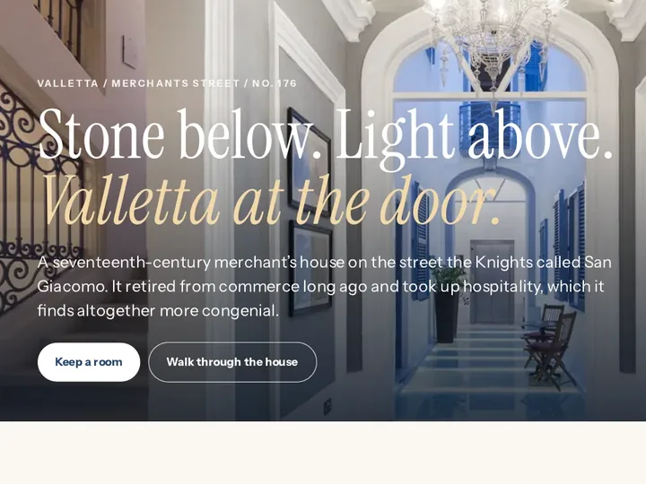
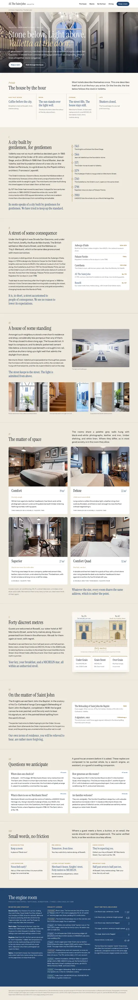
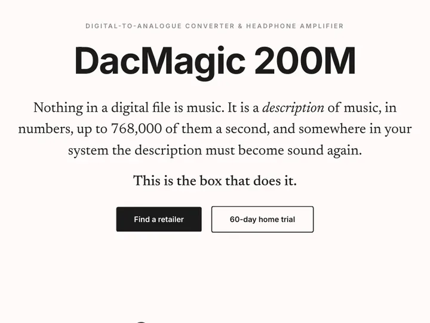
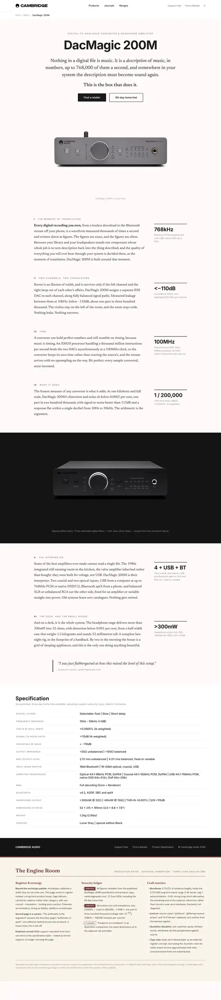
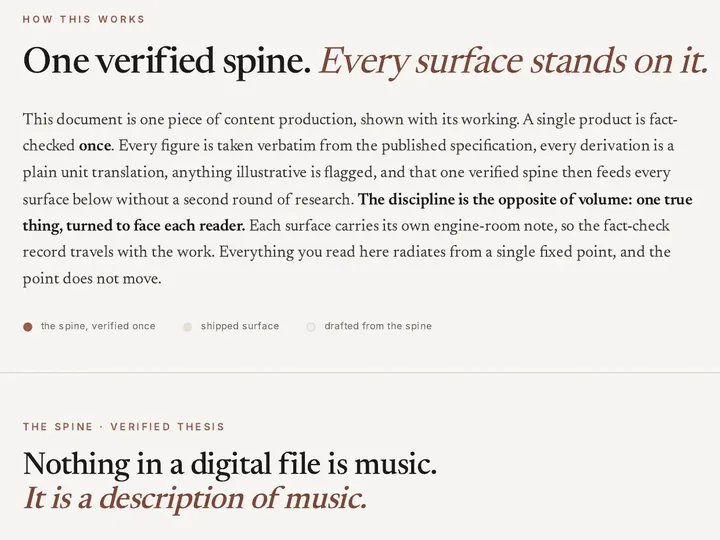
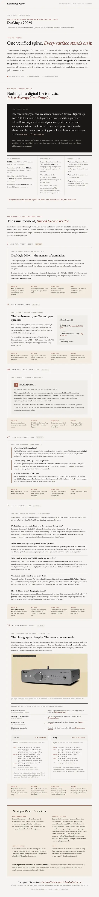
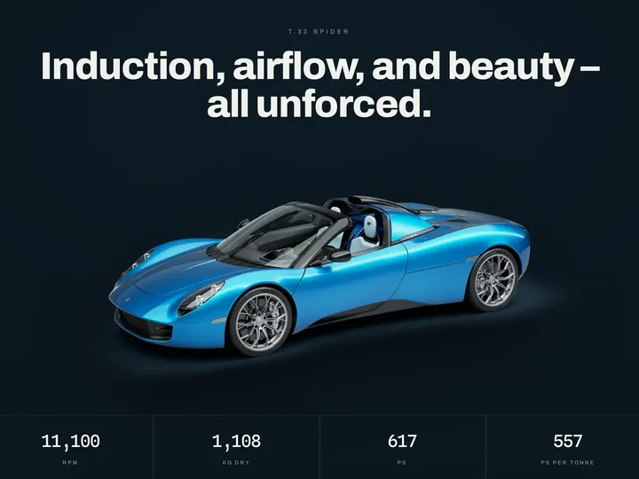
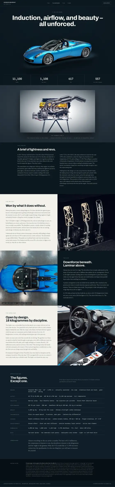
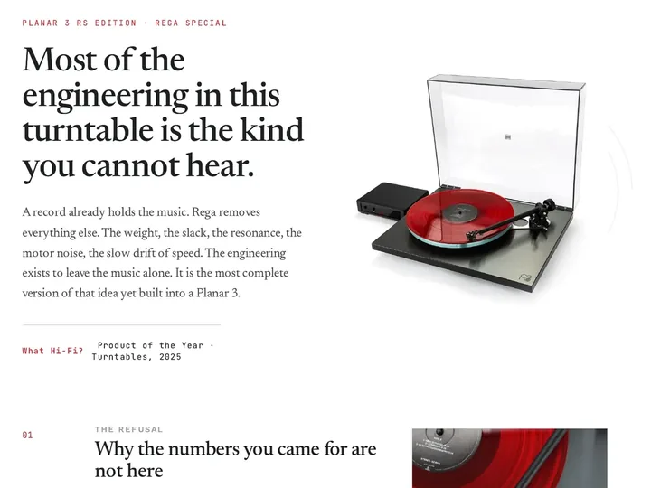
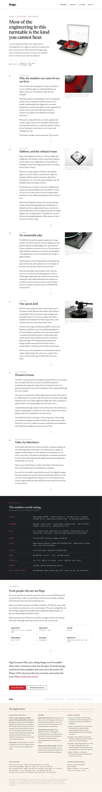

AI drafts the content. I answer for every claim.
I’m a content specialist for B2B, B2C, and B2G teams. I devise, produce, and scale digital content with frontier and open-weight models that I configure and check myself. The model learns your voice.
Currently on four retained accounts, in three countries. The concept pages below show the method, and three of them tie each claim to the note that backs it.
Check a draft of yoursOr ask for a content audit, or discuss a role or contract.
The problem, in 2026
Anyone can generate content now. The problem is that too little of it is worth reading, because “universal output” comes out too smooth and too generic to stick.
It sounds like everyone
Models write in a shared house style, and your brand inherits it.
A study of more than 15 million biomedical abstracts, 2010 to 2024, found a sudden rise in a small set of favoured words, and estimated that at least 13.5% of 2024 abstracts were processed with a language model. Kobak et al., Science Advances, 2025
It says what is not so
A model fills a gap with a plausible claim, and your page quietly stops being true.
In a 2026 preprint testing 35 open-weight models, the best fabricated answers 1.19% of the time at a 32K context, and fabrication rose as documents grew longer. Roig, arXiv:2603.08274
It gets accused, and nothing settles it
Detection tools cannot reliably tell human writing from machine writing, so good work gets doubted too.
The Authors Guild ran five detectors on ten human-written articles from 2022 or earlier, and scores for the same text ran from correctly human to 100% AI. Authors Guild
In 2026 a detector scored a Commonwealth Short Story Prize winner 100% AI-generated, and the Commonwealth Foundation stood by the story. Publishers Lunch
I was trained to check sources before I was trained to write. That order has never reversed.
You are, I suspect, looking for someone to stand behind every sentence your company publishes. That is my job. I take the dense material that regulated industries run on (specifications, standards, contract small print) and turn it into English a buyer can trust.
Every claim goes back to its source before it goes out. When a fact is missing, I flag it rather than invent it, and when a model has drafted a page, I check it line by line.
Companies retain me for that standard, and at micro1 I bring the same judgement to robotics training data.
If you have a few minutes, hear the tonality demonstration, then read Before and after.
What I can do for you
Three lines of work: governing AI-drafted content, writing and editing it myself, and working with AI directly, through tools I have set up myself and training data for frontier labs.
AI editing and governance
- Audits of existing content libraries, scored for machine-generated tells and search exposure, with the rebuild priced in writing.
- Detection and rewrite of machine-generated copy against codified, testable house standards, so content stays distinct and worth reading.
- Retrieval-augmented generation: with the client’s permission, NotebookLM indexed on client material, so answers cite the passage they came from.
- Search visibility in three places: Google ranking (SEO), AI answer boxes (AEO), and citation inside generative engines (GEO).
Writing and editing
- Source-checked B2B, B2C, and B2G writing, with claims checked against client documents and house style held on every agency account.
- UX and UI microcopy, bids, case studies, and board speeches.
- Tone of voice set by brand archetype. A/B testing and performance reviews.
- One fact base, verified once against source, then reused in every content type.
Tools and training data
- Drafting runs through tools I have set up myself, and nothing ships until it has passed my own instruments and my own eye.
- Training data for frontier AI labs: at micro1, I review and annotate robotic-arm video against customer grading guidelines.
How a piece reaches you
Five steps, in the order I take them, and a written record at the end.
You send the source
Specifications, standards, product sheets, contract small print: whatever your claims rest on.
A model drafts
It drafts from that material, in your voice, and the draft counts as unchecked until step three.
I check every claim
Each one goes back to its source. What I cannot source is flagged, corrected, or held back, and never invented.
I read it for tells
I rewrite machine phrasing and flat rhythm, then check the claims again.
You get the record
The finished piece arrives with its production notes: what was checked, what was held back, and why. You sign it off.
What the checking rests on
A model can compare a sentence with a source. It cannot know which sentence the reader will test first, or what the source leaves unsaid. Three kinds of experience tell me where to look.
Standards-bound writing
At BRITA I wrote the master content for a water-filtration range in a standards-bound industry. That taught me which claims a specification can carry, and which it cannot.
Reading technical documents
At Pipex I obtained server white papers to find what set a product apart. At CM-AG I drafted a patent application, where every word in a claim bears weight.
Grading against a rubric
At micro1 I review robotic-arm video against customer grading guidelines, and the annotations go through peer review.
A sample record
Six entries from the ledgers on three of the concept pages below, one for each status. Those pages carry 22 in all.
| Status | Page | On the page | The note |
|---|---|---|---|
| Verified | Content engine | “part in 300,000” | Derivations are unit translations only: −110dB ≈ one part in 300,000. |
| Sourced | T.33 Spider | “took the brief to Cosworth” | The Cosworth commission, the bespoke V12, the gear-driven ancillaries, and the 1960s inspiration are sourced to Cosworth and named press. |
| Held back | T.33 Spider | “a ceiling at 11,100” | The 12,100 rpm record belongs to the T.50 and was kept off the T.33, which runs the same architecture as the GMA.2 at 11,100. |
| Corrected | T.33 Spider | “torsionally stiff” | “Isotropic” was held back for a carbon laminate, which is anisotropic by design, so “torsional” was used instead. |
| Flagged | Content engine | “footprint of a hardback” | “Footprint of a hardback” is illustrative; exact dimensions sit in the table. |
| Removed | Planar 3 RS | “Set the labels aside” | All prices, at the client’s instruction. Value carried by inheritance, awards, and reviewers. |
Try it on your own words
Lexiphon is a worked example of a brand voice written down as a profile. Paste a draft of yours and see what it makes of it.
Studio All three tests, as one voice
Lexiphon
A brand voice is a set of decisions, and most of them sit above the words. Lexiphon writes those decisions down as a profile, applies it to one fixed set of facts, and checks your own drafts against it. Set the tone, and the rest follows.
How to read it. The four tone dimensions are the Nielsen Norman Group’s (2016). The twelve archetypes come from Margaret Mark and Carol S. Pearson, The Hero and the Outlaw (2001); where each sits on the four dials is my reading, and so is every rule that turns tone into structure. Two of the briefs are invented, as each one says, and the third quotes this page. Checking a draft, Lexiphon can measure formality and enthusiasm by proxy, sentence lengths, point of view, and figures that need a source; it cannot measure humour or respect, and it cannot tell whether a claim is true. It runs on rules in your browser, no language model is called, and nothing you enter leaves the page.
Found something worth fixing? A content audit does the same across a whole library, and prices the rebuild in writing.
Published work
Each piece here is live client work, checked against the client’s own source material and signed off by them. Where a piece was written without AI, it says so, and the concept pages further down show the AI-assisted method. Every link opens the page as the public sees it. Links confirmed live on 30 September 2026.
Public-sector content for procurement officers and specifiers, who read for compliance before they read for interest.
A project story for the same readers: procurement officers and specifiers.
Long-form editorial on how street furniture contributes to biodiversity net gain.
A reshoring case study for OEM and Tier 1 buyers: 26 weeks of committed supply chain exposure cut to a three-week UK production cycle.
A US SaaS case study, written to carry the client’s story without the usual superlatives.
A commissioned English voiceover. The voice is mine.
Master content for the professional water-filtration range, written by hand without AI as the UK English master, then translated for eleven international subsidiaries.
Content for the entire professional water-dispenser range (countertop and floorstanding units, integrated taps, bottling dispensers, filters, and accessories), written by hand without AI.
A sector page for fine-dining kitchens: water filtration for steam cooking, espresso, and glass washing, written by hand without AI.
Open the full writing samples folder, which also holds concept pages with their production notes.
Portfolio: five concept pages
These are full web pages for real brands, drafted with an LLM as testbeds for this method: my direction, my edit, my sign-off. Each page ends with its production notes: what was checked, what was held back, and why. Open any page to read it in full. On three of them, pins tie each claim to the note that backs it.










22 claims on three of the pages, each pinned to its entry in that page’s own ledger.
How I work
The CV sets out the record. This page lets you hear and test the method behind it. Every piece of work above was put through three tests: how it sounds, whether it is true, and who it is for. Five live demonstrations follow.
- 1TonalityHow it soundsOne pitch, AI-written then rewritten, played as sound.
- 2How a sentence landsHow it soundsWhere a sentence puts its weight, and how rhythm holds a reader.
- 3TelltaleHow it soundsThe words that give a machine away. Try it on your own text.
- 4Before and afterWhether it is trueA live product claim set beside the specification behind it.
- 5One fact base, many readersWho it is forSix pieces for six readers, drawn from one checked fact base.
Test one How it sounds 1 of 5
People forget that tonality is sound.
Silent reading often runs on an inner voice, so readers hear copy as well as see it. Copy with one rhythm and the same stock phrases sounds like every competitor’s page, and a buyer has little reason to keep listening.
Here is the same pitch, twice: on the left as an AI tool writes it, on the right checked and rewritten for marketing leaders. Listen to both.
Before: written by an AI tool, for anyone
0 tells, 0 words
I’m a results-driven content strategist with a passion for crafting compelling narratives that resonate with target audiences. With a proven track record across diverse industries, I leverage data-driven insights to deliver impactful content that drives engagement and elevates brand visibility.
Written for anyone. Ten tells, two long sentences in a row, and not one claim a reader could check.
After: checked, for marketing leaders
0 tells, 0 words
Generating copy is no longer the hard part. Answering for it is. I audit and rewrite machine-drafted copy against your house standards: every claim traces to a source, every market hears one brand. Four retained accounts, in three countries, are held to that standard.
Written for marketing leaders. It opens with the problem they own, in their terms, and two short lines land the point before the detail.
How Listen works. Each sentence plays as a phrase: the more words, the longer it lasts, and its last word takes the accent. Each tell sounds flat, in a minor key. The same text always plays the same way, so the only thing that varies is rhythm.
Why the right one sounds different. In speech, tone and emphasis carry intent. On the page, rhythm and word order have to do that work. The right-hand version also plays in an executive register, tighter and more decisive. I set that register by hand.
Inner voice: Marcela Perrone-Bertolotti and colleagues, “How Silent Is Silent Reading?”, Journal of Neuroscience 32(49), 2012, pp. 17554–17562.
Your own copy has a sound.
Test one How it sounds 2 of 5
How a sentence lands
Why some sentences stick and others slide past, measured as you read.
English saves its heaviest information for the end of a sentence; grammarians call it end focus. Whatever sits in the final seat is what the reader keeps, so I give that seat to the fact, and cut any clause that would steal it.
Across a paragraph, sentences hold a reader when their lengths vary, long against short. Two numbers measure it: spread, how far the lengths vary, and interleave, whether long and short alternate or clump.
Both are composition standards. No score here, or anywhere else, settles who or what wrote a text.
End focus: Quirk, Greenbaum, Leech, and Svartvik, A Comprehensive Grammar of the English Language (1985). The structural check simplifies Joachim Lambek, “The Mathematics of Sentence Structure”, The American Mathematical Monthly 65(3), 1958, pp. 154–170.
Rhythm reference: Abraham Lincoln, Second Inaugural Address, 4 March 1865, from the Avalon Project at Yale Law School. Sentence splitting is heuristic.
In detail: how grammar decides the last word
Lambek gives every word a type. A name is n and a sentence is s. An intransitive verb such as works is n\s: it takes a name on its left and returns a sentence. Two rules do the cancelling. A type x/y followed by y gives x; a y followed by y\x gives x.
Final: the payload cancels last
Draft: the tail cancels after the sentence is complete
The final seat belongs to whatever cancels last on the right. In the draft, the sentence was already complete at “ring”, so the trailing clause cancels against a finished s and takes the beat. Lambek called his own assignment of types “tentative”, and these are a working simplification in the same spirit. He withholds n from pronouns, so the n on “It” is ours.
In detail: how the two rhythm scores are calculated
For sentence lengths x₁ … xₙ with mean μ and population standard deviation σ:
Interleave is the lag-1 autocorrelation. Negative values mean long sentences tend to follow short ones, and positive values mean similar lengths travel in packs.
Test one How it sounds 3 of 5
Telltale
Paste any text and see the phrases that make readers suspect a machine wrote it.
Some words turn up in machine-written text far more often than in human writing, and people who use chat models have learnt to spot them.
The test runs my own house list, which is growing: 112 words and phrases to rewrite on sight, 55 that need a reason, and 14 of its structural patterns. It began with the words named in published research and in the guide Wikipedia’s editors keep on signs of AI writing.
A hit is a register problem. It is never proof of authorship: several of these words were already rising in academic prose before chat models arrived. The models amplified an existing drift, and structure beyond these patterns still needs a human reader.
Kobak, González-Márquez, Horvát, and Lause, “Delving into LLM-assisted writing in biomedical publications through excess vocabulary”, Science Advances 11, eadt3813 (2025).
Russell, Karpinska, and Iyyer, “People who frequently use ChatGPT for writing tasks are accurate and robust detectors of AI-generated text”, ACL 2025.
Matsui, “Delving Into PubMed Records”, Perspectives on Medical Education 14(1), 2025.
Wikipedia, “Signs of AI writing”, consulted 23 September 2026.
Test any text with Telltale
Paste a bio, a job advert, a supplier’s homepage, or your own draft. The test marks every tell it recognises as you type, and nothing you enter leaves your browser.
Listen plays whatever is in the box, and every mark sounds flat, in a minor key. It turns your copy into a short piece of music, so you can hear its rhythm, where its weight falls, and every tell, before a reader does.
Rewrite on sight Needs a reason Structural pattern Hover over a mark to see its entry.
Test two Whether it is true 4 of 5
Before and after, on a real product page
The same claim, made twice: once in marketing adjectives, once from the specification.
Cambridge Audio’s own page for the DacMagic 200M makes its case for stereo separation in one sentence. The concept page makes the same case from the specification.
The edit keeps the one fact, finds the number behind it in the manual, translates the unit into something a listener can picture, and lets each sentence land on its payload.
Before Cambridge Audio’s page
“These fully balanced, optimised, and efficient signal paths reveal previously hidden glittering musical prizes.”
- Two qualities asserted, “optimised” and “efficient”, and neither one measured.
- One design fact, “fully balanced”, named without explanation.
- The sentence ends on a metaphor, so there is nothing to check.
- The spec sheet holds the figure that would prove the point, and the page never uses it.
Source: Cambridge Audio, DacMagic 200M product page, cambridgeaudio.com, consulted 23 September 2026.
After the concept page
Stereo is an illusion of width, and it survives only if the left channel and the right keep out of each other’s affairs. DacMagic 200M assigns a separate ESS DAC to each channel, along fully balanced signal paths. Specified leakage between them at 10kHz: below −110dB, about one part in three hundred thousand. The violins stay on the left of the room, and the room stays wide. Nothing leaks. Nothing narrows.
CorrectedOne word changed from the concept page: “Measured” became “Specified”, because the figure is Cambridge’s published specification, not a measurement.
Figure: Cambridge Audio, DacMagic 200M manual, technical specifications. Page: a concept page drafted with an LLM as a testbed for the method, not commissioned by Cambridge Audio.
Test three Who it is for 5 of 5
One fact base, many readers
How one set of checked facts becomes every piece of content a company needs.
Research once, check once, then write for every reader from the same verified facts. The Cambridge Audio content engine draws six surfaces from a single spine, and none of them needed a second pass through the specification.
Search and AI answer boxes get the same facts, never a separate page written for them: I write answer blocks to be lifted whole, which is the form a model can quote.
Drag the engine to turn it, and select a surface to see for whom it is written. The orange streams are the checked facts, travelling from one spine to every reader.
One spine, verified once
Drag to turn, or select a surface
Experience
Current roles first, then the history behind them. The method was learnt in two kinds of work.
Writing and editing
- A newsroom
- Telecoms
- Web hosting
- Product launches
Training and translation
- Business English for executives and their teams
- Legal and product translation
- Coaching university students
Freelance consultant, Switch Ltd
- Operate on four retained accounts: BAMUK Group in the UK, Kalon Software in the US, Alter Domus in Malta, and a manufacturing group, across web content, press, and internal communications.
- Write speeches and C-level material for Alter Domus Malta, and change-management campaigns for the manufacturing group.
- Apply brand archetypes to fintech, SaaS, and manufacturing messaging, replacing jargon with verified facts and human stories.
Content Producer, micro1
- Freelance member of the expert network of micro1, a supplier of human-generated data to frontier AI labs, in parallel with agency and direct client accounts.
- Engaged as Video Annotation Specialist on a robotics pipeline: robotic-arm video reviewed against customer grading guidelines, action and event tagging, peer review of annotations, and written observations.
Consultant, Three Lions English GbR
- Run an English consultancy in three lines: company training, legal translation, and web content.
- Coach C-levels, senior managers, and project teams at Assemblin Caverion Group, Krüger, Metsä, Nickel, NRW Invest, and OBI in Business English, and write their speeches.
- Build CEFR-aligned interactive quizzes and grammar videos with NotebookLM and an LLM.
Copywriter, BRITA SE
- Produced B2B and B2C copy for a global water-filtration brand in a standards-bound industry, across web, press, trade, and print.
- Wrote the master web content that kept messaging consistent across channels and markets, and ran the company tonality briefings.
Selected history
Web Editor and Copywriter, CM-AG
Cologne
- Cut a CMS setup wizard from seven steps to five. The new flow tested higher in A/B and was implemented.
- Wrote web and print content, and drafted the US patent application for homepageNOW, an online shop that publishes ready-made websites.
Humyo
Later acquired by Trend Micro
- Sole author of all launch content, B2C and then the B2B partner channel.
- Created the Goldfinger vault concept for servers housed in a former Bank of England vault.
Managing Editor, 1&1 Internet (now IONOS)
Berkshire
- Brought content production in-house and cut the recurring agency spend.
- Ran all UK SEO content, and led editorial strategy for the US launch.
Chief Editor, SoccerAge.com (later Goal.com)
New York and Milan
- Grew the editorial desk from three to twelve.
- Negotiated governing-body press accreditation for the team in place of fee rises, so editorial spend held flat.
Troubleshooting consultant, Pipex UK
- Consulted on the revised VPS launch, obtained server white papers, and re-launched the range based on Intel-optimised VT switching uniqueness and European exclusivity.
Voice and translation
- Voiceover for Vodafone and The Club of Rome, and German-to-English translation and voiceover for Africa GreenTec and Birkelbach Media Group, recorded from a home studio.
Mobile UI Copywriter, Vodafone
Düsseldorf
- Wrote the UX microcopy for the mobile portal, used by millions, and a Plain English word list tuned to read fast in very tight screen space.
B2B Channel Editor, DHL
Düsseldorf
- Advised on English-language content and application usability for international suppliers.
Clients and sectors
Whom I have worked with, and in which industries.
- Clients
- BRITA, Vodafone, Alter Domus, BAMUK Group, Kalon Software, Contracts Engineering, Assemblin Caverion Group, Furnitubes, Krüger, Metsä, Nickel, NRW Invest, OBI, Trend Micro, Pipex UK, Birkelbach Media Group, and Africa GreenTec
- Sectors
- Fintech, SaaS, manufacturing, telecoms, hosting and cloud, water filtration, food and beverage, legal, specialist construction, building technology, technical building solutions, facility management, and AI training data